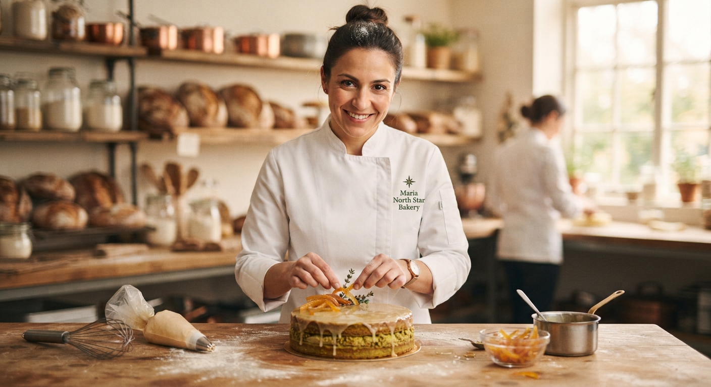

Organic Flour
Stone-milled grains from regional farms, selected for flavor and grown with the soil in mind.

Our Story
North Star began with one borrowed oven, a well-loved starter, and a belief that the best bakeries know your name.
What started as a Saturday bread table grew into the neighborhood bakehouse we are today. We still mix every dough by hand, visit our growers, and make room at the counter for conversation.
“We bake slowly, so the neighborhood can slow down together.”
What Guides Us
Simple food asks for exceptional ingredients. We choose every one with flavor, craft, and community in mind.
Stone-milled grains from regional farms, selected for flavor and grown with the soil in mind.
Cultured butter, cream, and eggs from family-run producers within a morning's drive.
Long, cool rests build more flavor naturally and make bread that feels as good as it tastes.
The Early Risers

Founder & Head Baker
Keeper of the starter, early riser, and believer that every neighborhood deserves excellent bread.

Pastry Chef
Turns local fruit, cultured butter, and a little patience into the flakiest morning rituals.

Cake Artist
Makes celebration cakes feel personal, seasonal, and just the right amount of special.